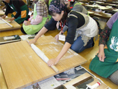
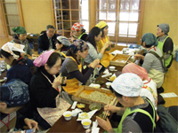

|
|
1．あいさつ 青木JA県女性組織協議会会長と滝澤生協ネットワーク協議会会長よりあいさつがありました。   2．活動報告 そば打ちと試食 JAちちぶ荒川支店のそば道場｢あらかわ停｣で、4人1組で、そば打ち体験をしました。講師は、そば道場のそば打ち名人。前日に石臼で挽いた秩父産そば粉を使い1時間ほどで完成しました。完成したそばと用意していただいた野菜のかき揚げ、摘みたてイチゴ、秩父の漬物｢しゃくし菜漬けの油いため｣をいただきながら交流しました。その後、隣接する産地直売センターで見学と買い物をしました。 交流 6名ほどのグループに別れ、“お互いの事をそれぞれ知ろう”と交流をしました。 3．購買生協のおすすめ商品
※JAさんから、椎茸、秩父しゃくし菜漬けをいただきました。 |